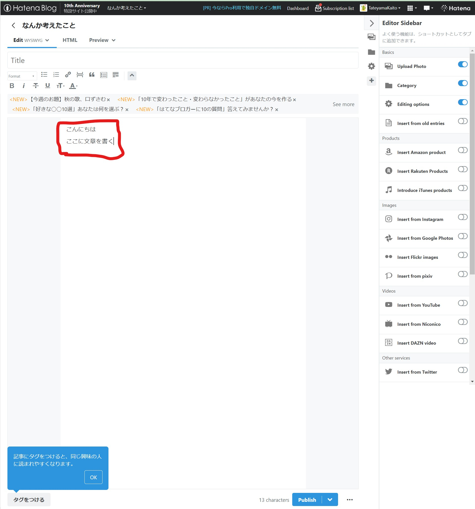
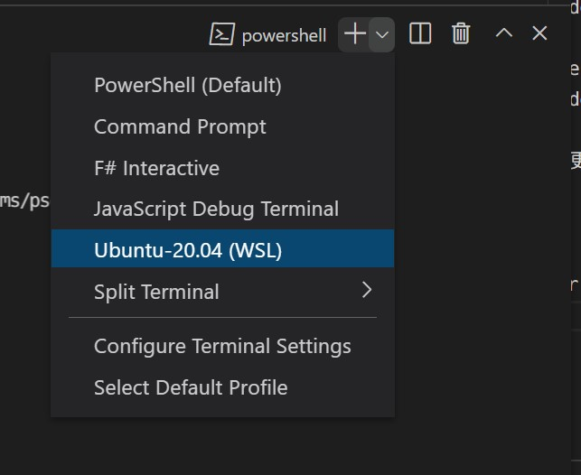
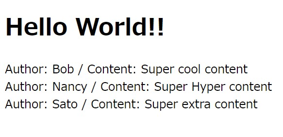
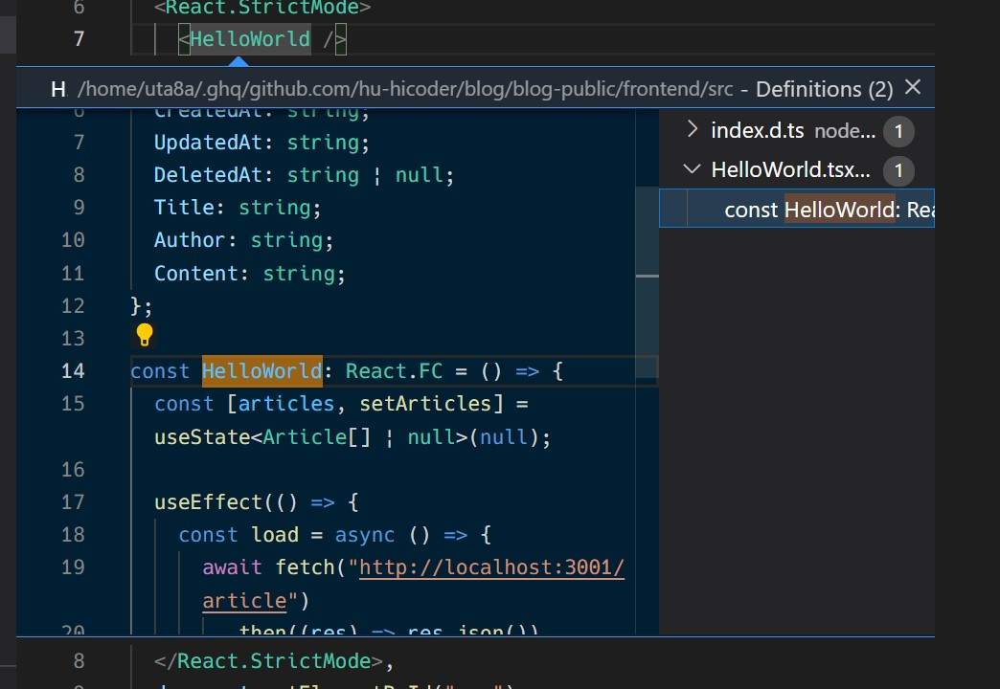

チーム開発でブログを作ろう: はじめに
この文書では、チーム開発の題材として「ブログ」をとりあげて、Web開発、特にフロントエンド、サーバサイドに関する知識をつけてもらいます。
簡単なところから説明を行うので、パソコンと作業に取り組む時間だけ確保していれば、プログラミングが得意でなくても大丈夫です。一緒に少しずつ学んでいきましょう。
この教材で扱うこと
プロジェクトのセットアップが終わって各サーバとの連携が取れた程度のブログの雛形が渡されます。この雛形を読んで仕組みを理解し、ブログの機能追加を行います。
これらの一連の流れを、セットアップなどの最初に躓きがちなところをスキップして習得することで、まず完成形を作りモチベーションを保ったまま学習を継続してもらうことを目的としています。
この教材で扱わないこと
個別の言語の入門など、またツールについての説明は扱いません。(これらはGoogleで検索をかけると僕が書くよりもっと分かりやすい動画、書籍、ブログの記事が出てくるので...)
基本的に分からないことは検索して欲しいなと思っています。また、検索してこれを新しく知りました、ということは積極的にdiscordで記事など共有してくれたら嬉しいです。
進め方
基本的に番号順に章を読み進めていってください。左上の横三本の棒のボタンを押すと目次が表示/非表示されます。
章を読んで確認テストが終わったら、 こちらのGoogle form から進み具合を報告してみましょう。何か困ったことがあったら、どこまで進んだかと一緒に報告してくれると嬉しいです。
それでは、完成形のイメージの章から行ってみましょう。
確認テスト
- パソコンと、作業に取り組む時間を用意しましたか？
- 進め方がイメージできましたか？
お願い
何か間違いなど見つけましたら github のissueから連絡してください。私も専門家ではないので間違えていることも多いと思います。よろしくお願いします。
完成形のイメージ
今回作るものはブログです。Webサービスでブログが書けるものはたくさんありますが、例えば はてなブログ を見てみましょう。
「New Entry」というボタンを押すとブログの記事を新規に書き始めることができます。

以下の赤枠部分にブログの記事の文章を書いて、「Publish」ボタンを押すと記事が世の中に公開されます。

このように、ブログを作るときには以下の機能があればよさそうです。
- ブログを書く編集画面
- ブログを表示する画面
実際には会員登録の機能などが必要です。しかしここでは一旦コア機能を実装してしまってから考えることにしましょう。このように、サービスの中心的な価値を届ける最小限のプロダクトをMVP(Minimum Viable Product)ということもあります。
最小限のMVPをまず完成させることを目指しましょう。
確認テスト
- 完成形のイメージが湧きましたか？
環境構築をしよう
ここでは以下のことが達成できればOKです。
- GitHubへの登録、HiCoder Organizationへの登録
- 開発に必要なエディタの導入(VSCode)
- 開発環境のためにWSL2を導入(Windowsの人のみ)
- docker、docker-composeを導入
- 開発環境にアクセスできることを確認する
ここからひとつひとつは退屈で面倒かもしれません。ですが、必要になるので頑張っていきましょう。
また、「検索する力」が後々重要となってくるので、ここではそれも身に付けてほしいなと思っています。そのため説明はそれほど丁寧ではないです。初めて聞いた単語や、エラーメッセージは検索にかけてみて、分からなかったらdiscordで質問を投げて、検索する力を向上させていってください。
確認テスト
- 環境構築で何をすればよいのか理解した
GitHubへの登録、HiCoder Organizationへの登録
ここでは、「GitHub」という開発に使うソースコード管理プラットフォームでアカウントを作り、HiCoderの組織に属するように設定をします。
手順: GitHubへの登録
- GitHubアカウントを作ります。 https://github.com/ からSign Upしてください。usernameは実名とは別のハンドルネームが良いと思います。また、メールアドレスは公開してもよいものを使ってください。
- わからなくなったら検索してみましょう。「GitHub アカウント 作り方」などでGoogle検索をかけてみてください。
- 困ったらdiscordの雑談チャンネルで質問してみましょう。
- アカウント名は、例えば https://github.com/uta8a だと
uta8aにあたります。自分のページからアカウント名を発見してください。
これで完了です。
手順: HiCoder Organizationへの登録
- 前の 「手順: GitHubへの登録」で得たアカウント名をdiscordでHiCoderの部長に伝えてください。
- 部長がHiCoder Organizationへ入れる設定をします。
- GitHubからメールが届きます。Invitationや招待といった雰囲気のボタンを押してください。
- 確認として、https://github.com/settings/organizationsを見てみましょう。HiCoderが登録されていればOKです。
これで完了です。
確認テスト
- GitHubアカウントを作成した
- HiCoder Organizationへの登録が完了した
開発に必要なエディタの導入
ここでは、プログラムを書くための道具であるエディタを導入します。
手順
- エディタの導入をします。特にこだわりがなければVSCodeを使ってください。
- VSCodeはマイクロソフト社が主に開発している高機能なエディタです。
- ダウンロードはここからできます。 https://code.visualstudio.com/
- 以下の参考の
Visual Studio Code の準備が参考になると思います。頑張ってください。 - 参考: https://ynucpc.github.io/blog/2020/03/24/howtowsl-vscode/
- インストールできたら、実際に少し使ってみましょう。
- まず、作業フォルダを決めます。開発用のフォルダはまとめておくと後々整理しやすいです。
- 作業フォルダを決めたらその中でVSCodeを開きます。そしてファイルを作ります。
test.txtというように、テキストファイルがよいでしょう。そのテキストファイルに何か書き込んでみてください。Ctrl+Sで保存、など、ショートカットについて調べてみるのもよいと思います。 - このあたりのVSCodeの操作方法は「VSCode 操作方法」などで検索をかけるといいと思います。さきほどの参考記事( https://ynucpc.github.io/blog/2020/03/24/howtowsl-vscode/ )も役に立つでしょう。
これで完了です。
確認テスト
- エディタを導入して少し使ってみることができた。
開発環境のためにWSL2を導入
WSLの導入をします。これはWindowsの方が対象です。Macの方は次の章に進んでください。
手順
- まず、OSについて説明します。OSはパソコン(ハードウェア)の機能を使い様々なことを実現している縁の下の力持ちのようなソフトウェアです。Windows, Android, MacOS, LinuxのようにたくさんのOSがあります。その中でWindowsで開発を行うことは初心者には難易度が高く、Linuxで開発を行う方が簡単なように私は感じたので、今回はWindowsの上でLinuxを動かして、その上で開発を行います。
- つまり、開発環境としてWSL2を使います。
- https://docs.microsoft.com/ja-jp/windows/wsl/install を参考にWSLを導入してください。usernameはスペースを使わないで、短いものにすると良いと思います。例えば私は
uta8aを使っています。 - なにか困ったことがあればdiscordで質問してください。
- できたらVSCodeでフォルダを開いて、ターミナルを開いてください。そこにコマンドを打ちます。このときターミナルではUbuntuを選択してください。

sudo apt update
sudo apt upgrade
とパッケージの更新をして、
uname -a
と打ってEnterを押してみてください。画面にLinux...から始まる文字列が表示されたらOKです。このunameコマンドはOSの種類を確認するコマンドです。
確認テスト
-
WSL2を導入し、
uname -aの結果を見ることができた
docker、docker-composeを導入
ここでは、開発のために自分の手元のPCでサーバを立ち上げるために、dockerとdocker-composeというソフトウェアを導入します。
手順: Dockerの導入
- Install Docker Engine on Ubuntuを参考に、WSL2の上でコマンドを打ってdockerをインストールします。
- 確認のため、インストールを終えたら
sudo docker psとターミナルで打ってみてください。以下のように表示されたらうまくいっています。
$ sudo docker ps
[sudo] password for uta8a:
CONTAINER ID IMAGE COMMAND CREATED STATUS PORTS NAMES
トラブルシューティング: もしエラーが起きたら？
- ここは非常にエラーが色々な種類で出るので、エラーメッセージで検索してみて、15分考えて分からなければdiscordで質問してみましょう。
手順: docker-composeの導入
- docker/composeからReleasesの
docker-compose-linux-x86_64を取ってきます。アドレスをコピーしてWSL側でダウンロードしましょう。
wget https://github.com/docker/compose/releases/download/v2.1.1/docker-compose-linux-x86_64
sudo cp ./docker-compose-linux-x86_64 /usr/local/bin/docker-compose
sudo chmod +x /usr/local/bin/docker-compose
- versionコマンドで確認をします。以下のように表示されれば成功です。
$ sudo docker-compose -v
Docker Compose version v2.0.1
確認テスト
-
docker, docker-composeを導入し、
sudo docker psでの確認、sudo docker-compose -vでの確認も行った
開発環境にアクセスできることを確認する
ここでは、以下のことができればOKです。
- gitを導入し、GitHubにWSLの方でつながるようにする。
- GitHubからblogの雛形を取ってきて、WSLの方でdocker、docker-composeを用いて立ち上げる。
- npmを導入し、フロントエンドサーバを立ち上げる。
手順: gitの導入とGitHubへの疎通
- GitHubは、自分のソースコードを世界に公開するためのプラットフォームです。最近はインターンや就活で、自分はこれまでこんなことやってきました！と自分の実力や興味関心を伝える手段としても重要視されてきている気がします。積極的に使っていきましょう。
- gitにnameとemailを登録します。nameはGitHubのアカウント名、emailはGitHubに登録するときに使ったものを使ってください
git config --global user.name "自分の名前"
git config --global user.email "メール@example.com"
次にWSL側では、鍵を生成します。
mkdir ~/.ssh
cd ~/.ssh
ssh-keygen -t rsa
Nameはgithub_key, passphraseは指定しなくていいです。
~/.sshを確認します。
ls
ファイルがあればOKです。
権限を変更します
chmod 600 github_key
次に、GitHub側に公開鍵を伝えます
cat github_key.pub
出てきた内容をコピーして、GitHub>Settings>SSH and GPG keys>New SSH Keyから追加。
configを作ります
touch config
code ./config
configに書き込む内容
Host github.com
HostName github.com
PreferredAuthentications publickey
IdentityFile ~/.ssh/github_key
configの権限を変更します
chmod 600 config
sshが通るか確認します
ssh -T git@github.com
Hi <username>! You've successfully authenticated, but GitHub does not provide shell access.みたいなのが出たらOKです。お疲れさまでした。
うまくいかない場合は、エラーメッセージを調べてみて15分たっても分からなければ質問してみましょう。
手順: dockerでblogの雛形を立ち上げて確認する
blogの雛形はこちらです。hu-hicoder/blog:handson ここでは、handsonブランチを使います。
はじめに、git cloneでblogの雛形を取ってきます。
cd ~
git clone -b handson git@github.com:hu-hicoder/blog.git
cd blog
ls
以下のような表示がされていればOKです。
$ ls
blog-editor blog-public blog-style LICENSE README.md
では、続いてdocker, docker-composeを使ってプロジェクトを立ち上げます。
cd blog-public/scripts/docker/
sudo docker-compose up
以下のような表示がされていればOKです。
...(省略)...
docker-backend-1 | ____ __
docker-backend-1 | / __/___/ / ___
docker-backend-1 | / _// __/ _ \/ _ \
docker-backend-1 | /___/\__/_//_/\___/ v4.6.1
docker-backend-1 | High performance, minimalist Go web framework
docker-backend-1 | https://echo.labstack.com
docker-backend-1 | ____________________________________O/_______
docker-backend-1 | O\
docker-backend-1 | ⇨ http server started on [::]:3001
ブラウザで http://localhost:3001/ にアクセスしてみてください。以下のような表示がされていればOKです。
サーバを落とすときは、Ctrl+cで止めた後に
docker-compose down
としてください。
手順: npmを導入し、フロントエンドサーバを立ち上げる
前回のdockerではデータベース用のサーバとバックエンド用のサーバが立ち上がっています。フロントエンドだけはDockerでの開発が向かないと思われるので、別で立ち上げます。
まず、npmというフロントエンド開発のためのツールを導入します。今回はこのツールをnodebrew経由でインストールします。
curl -L git.io/nodebrew | perl - setup
code ~/.bashrc
bashrcを開いたら、以下を一番後ろに追記します。
export PATH=$HOME/.nodebrew/current/bin:$PATH
そしてターミナルで以下を実行します
source ~/.bashrc
これで設定は完了です。npmをインストールします。基本的にls, ls-remote, install-binary, useを覚えていればよいです。詳しくは公式ページを見てください。
# node,npmの検索
nodebrew ls-remote
# バージョンを選んでインストール
nodebrew install-binary v16.13.0
# ローカルで使うバージョンを指定
nodebrew use v16.13.0
インストールが成功したか確認します。
node -v
以下のように表示されていればOKです。
$ node -v
v16.13.0
別のターミナルでdocker-compose upしている状態で、もう一つターミナルを立ち上げて
cd blog-public/frontend
npm i
npm run dev
としてフロントエンドサーバを立ち上げます。ブラウザで http://localhost:8080/にアクセスし、以下のように表示されていればOKです

サーバを止めるときはCtrl+cでOKです。バックエンドのdockerも落とすことを忘れずに。
確認テスト
- gitを導入し、GitHubにつながることを確認した
- dockerでblogの雛形を立ち上げて、ブラウザでアクセスして確認した
- npmを導入して、フロントエンドサーバを立ち上げた
フロントエンドを見てみよう
これまでで、環境構築は整っていて、バックエンドサーバとフロントエンドサーバを立ち上げて実際に動かしてみることができたと思います。
ここでは以下のことが達成できればOKです。
確認テスト
- フロントエンドについてこれからどんなことを学ぶか分かった
フロントエンドがどういう仕組みで動いているのか知る
ここではブログの雛形がどういう仕組みで動いているのか、フロントエンドの観点から学びます。
一般に、Webページはどのようにして私たちのもとに届いているのでしょうか？
サーバとクライアント
ここでは、「サーバ」「クライアント」の二つの概念を元に説明します。
サーバとは、雛形でいうところの npm run dev で立ち上げたフロントエンドサーバです。サーバは一般に、ネットワークを通じたなんらかのリクエストを受け取りレスポンスを返すプログラムを動かしたものです。プログラムを動かしたものをプロセスと言います。サーバは、実態としてはひとつまたは複数のプロセスが動いていて、リクエストがネットワークを通じて飛んでくるのを待っている状態になります。
クライアントは、雛形でいうところのあなたのブラウザを指します。ブラウザから http://localhost:8080/ にアクセスして画面を見たと思います。この、ブラウザにURLを打ち込んだ後の処理で、ブラウザからフロントエンドサーバに向けてリクエストが飛んでいます。フロントエンドサーバはリクエストを待ち受けていますから、リクエストがやってきたらそのリクエストの内容に応じてレスポンスを返します。ここでは、htmlファイルというテキストファイルや、JavaScriptが書かれていたり、CSSが書かれているファイルをサーバが返し、クライアントであるブラウザ側で見ることになります。
TypeScript
TypeScriptはJavaScriptに変換される言語のひとつです。AltJSのひとつという言い方をされることもあります。他のAltJSにはElm, Reasonなどがあります。
特徴として、漸近的な静的型つけがなされていることがあげられます。通常の使い方をしていれば、JavaScriptに変換するタイミングでコードを書く人がミスをしていたらコンパイルエラーという形で指摘をしてくれます。
The TypeScript Handbook が参考になると思います。私はこのHandbookを通しで読んだことはないので、もし興味があればぜひ輪読をしましょう。お声掛けください。
React
フロントエンドはHTML, JavaScript, CSSから構成されます。しかし、プロジェクトが大きくなるにつれて以下の問題が発生しました。
- 機能が増えると、共通化を行い部品を使いまわしたい。しかし、UIの共通化は難しい
- データを元に描画を決定したい。具体的には、関数
fにデータを渡したf(data)が描画結果(HTMLの一部分とjsとcss)を返して欲しい。
これらの課題を解決するためにFacebook(当時、現Meta)が作ったフロントエンド向けライブラリがReactです。Reactは上の課題を解決し、jsxという形でHTMLをJavaScriptの中で書くことができます。jsxはJavaScript版で、tsxはTypeScript版です。blogの雛形では、以下のようにtsxという形でデータ主導でコードを書くことができます。
const HelloWorld: React.FC = () => {
// ...省略...
return (
<>
<h1 className="hello">Hello World!!</h1>{" "}
{articles && articles.map(item => <div key={item.ID}>Author: {item.Author} / Content: {item.Content}</div>)}
</>
);
};
教材は Reactチュートリアル1：犬画像ギャラリーを作ろう が良い気がしますが、これも私はまだ通して読めてないので興味があれば一緒に輪読しましょう。
以上でフロントエンドの仕組みは終わりです。次は具体的なコードを眺めていきましょう。
確認テスト
- サーバとクライアントの概念が自分なりに説明できる
- TypeScriptとJavaScriptの関係が自分なりに説明できる
- Reactについてなんとなく分かった
初めに何からコードを読んでいけばいいのか知る
ここでは、実際のフロントエンドのコードを読んでいきます。
フロントエンドのプロジェクトは blog/blog-public/frontend にあります。
このフロントエンドのプロジェクトでは、npm というパッケージ管理ツールを使用しています。また、言語はTypeScript ( .ts, .tsx )を主に使っていきます。
npmや、yarnといったパッケージマネージャを使っていることが分かっていたら、 package.json という名前のファイルをまず初めに見ていくとよいでしょう。
package.json を読む
blog-public/frontend/package.json を開いて見てみましょう。
これはJSONという形式で開発時の設定が書かれています。色々なことが書かれていますが、今回は scripts の項目だけ着目します。
ここには開発時のコマンドが書かれていて、自分で定義することができます。フロントエンドサーバを手元で立ち上げるときに webpack-serve というソフトウェアを使って npx webpack serve --config webpack.config.js のようにしてフロントエンドサーバを立ち上げているのですが、毎回このコマンドを打ち込むのは面倒です。そこで、このコマンドに dev というエイリアス(別名を割り当てる)をつけてあげて npm run dev というコマンドで簡単にフロントエンドサーバを立ち上げて開発できるようにしています。
あとは devDependencies や dependencies では外部のライブラリを使っています。devDependencies は開発のときにしか使わないので最終的に本番環境にビルドするときには含まれず、 dependencies は本番環境にビルドする成果物に含まれます。これは後で機能追加を行うときに使う知識なので覚えておきましょう。
これはプロジェクトごとに違いますが、今回は src ディレクトリの中にコードの本体があるのでそこを見ていきましょう。
srcの中を読む: app.tsxを読む
blog-public/frontend/src を開いて見てみましょう。
index.htmlというHTMLファイルを開くと、idがappのdiv要素がひとつだけあることが分かります。Reactは、このdiv要素に対して作用し、このdiv要素の中で文章を表示したり、ボタンを配置したりといったUI操作を行います。その作用するコードはどこかというと、app.tsx の中のReactDOM.renderにあたります。
ReactDOM.render(
<React.StrictMode>
<HelloWorld />
</React.StrictMode>,
document.getElementById("app") // ここでid=appの要素に対し作用している
);
コードを読んでいくときは、VSCodeのコードジャンプを使うと楽です。Ctrlを押しながら知らない単語をクリックすると、そのコードが宣言されている場所に飛ぶことができます。(できないときもあります)
例えば、<HelloWorld /> をCtrlを押しながらクリックしてみたときの様子です。

ポップアップが表示されて、HelloWorldが宣言されている場所が表示されています。こうしてどんどん知らない変数は調べていきましょう。
また、調べ方としては import を見るという手もあります。import は別ファイルで宣言された変数や関数をこのファイルで使います、という意味なので、定義を見るために別ファイルを見に行きましょう。
今回は HelloWorld.tsx を見ていきます。reactとreact-domは外部ライブラリなので、src内にはありません。
srcの中を読む: HelloWorld.tsxを読む
HelloWorld.tsx を開いて見ていきましょう。
ここでは詳しく立ち入りませんが、以下のキーワードを調べて理解すれば大丈夫です。もちろん、15分調べて分からなければdiscordで尋ねてみましょう。
これらを調べてみて、「HelloWorld関数はjsxを返していて、http://localhost:3001で立っているバックエンドサーバから受け取ったレスポンスをjsonに変換してarticles変数にセットして描画している」ということが分かると理想的です。いきなりここまで理解するのは難しいと思うので、分からないことをひとつずつ丁寧に調べていきましょう。
確認テスト
-
package.jsonについて自分なりに説明できる
- scriptsの項目の意味が説明できる
- devDependencies, dependenciesの項目の意味が説明できる
- コードジャンプを試してみた(VSCodeを利用している場合のみ)
-
HelloWorld.tsxの各項目を調べてなんとなく理解した
機能追加の種類を知る
ここでは、どのように機能追加をしていけばいいかを学びます。
機能追加をするとき、大きく分けて二つの方針があります。
- コードを書く。
- 外部ライブラリを導入する。
実際は、外部ライブラリを導入したらそのライブラリを使うためにコードを書く必要がありますが、ここでは、コードを書く流れと、外部ライブラリを導入する流れを分割して紹介します。
コードを書く
Reactの紹介で、「データを元にしてUI描画を行う」というような話をしました。コードを追加するときも、基本的には 「バックエンドサーバから得たjson形式のレスポンスを、うまく加工してUIに変換する」 という作業が多いです。
手順としては以下のようになります
- 1: バックエンドサーバとの接続がうまくいっていることを確かめる
- 2: フロントエンドでクライアントに対し何を返すべきか考える
- 3: style, UIの調整
1について、HelloWorld.tsx では以下の部分でバックエンドサーバとの通信を行っています
useEffect(() => {
const load = async () => {
await fetch("http://localhost:3001/article") // ここでバックエンドサーバと通信
.then((res) => res.json())
.then((data) => setArticles(data["Articles"]))
.catch((err) => new Error("Cannot Fetch" + err));
}
load()
} , []);
そのため、バックエンドサーバのパス(articles から別のものに)を変えるだけで、最初のうちはこれをコピペしてちょっとだけ修正して使っていくのが良いと思います。
2について、 articlesの宣言箇所からarticlesの型は Articleの配列またはnullと分かります。そのため、以下の描画部分では、item.IDやitem.Authorなどを使っていますが、これ以外にも item.title なども使うことができます。
return (
<>
<h1 className="hello">Hello World!!</h1>{" "}
{articles && articles.map(item => <div key={item.ID}>Author: {item.Author} / Content: {item.Content}</div>)}
</>
);
3について、これはCSSを当てていくか、ライブラリを使うことになります。
こうしてコードを書くとしても、どうしても個人では限界があります。そこで、フロントエンドではnpmを利用して外部ライブラリを導入することが一般的です。これを説明していきます。
外部ライブラリを導入する
外部ライブラリを使うときは、例えば以下のような状況が考えられます。
- markdown形式でブログを書いて、HTMLでレンダリングさせたい。 → markdown-it の利用
- useEffect周りをもっと簡潔に書きたい。特に、エラー周りをもっと楽に扱いたい。 → swr の利用
- CSSをもっと楽な方法で書きたい → Tailwind CSS
他にも様々なライブラリがありますが、大抵は以下のコマンドで入ります。
npm install name-of-the-library # 本番環境でも使う
npm install -D name-of-the-library # 開発でしか使わない
ライブラリを入れたら、 import { name-of-function } from "name-of-the-library" をtsxファイルの中に書いて使えるようになります。
うまく行かない場合やよく分からない場合はその外部ライブラリのREADMEやdocumentを見るとよいでしょう。
確認テスト
- コードを書いて機能追加するときに、どこを変更していけばよいかのイメージがついた。
- 外部ライブラリが色々あることを知った。導入の仕方のイメージがついた。